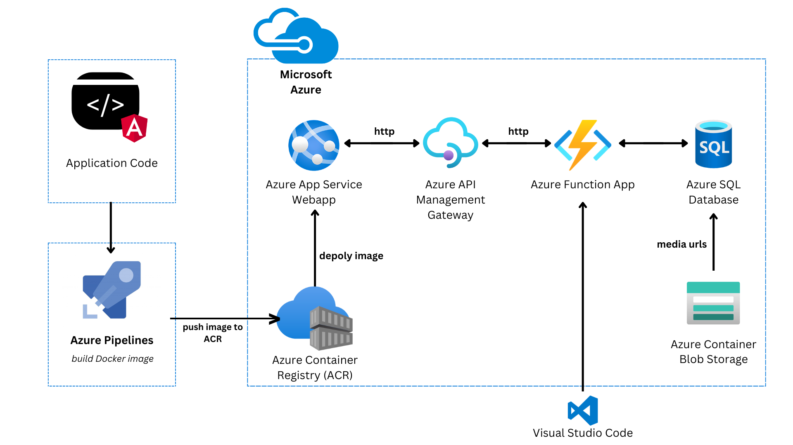

<div class="content-container">

  <div class="content">
    <p class="caption"></p>
    
    <br>
    <br>
    <p>This project leverages a suite of Azure services to create a comprehensive music streaming solution:</p>
    <p class="bullet">
      <span class="bold-text">• Azure SQL Database:</span>
      Provides a reliable and scalable relational database for storing album and song metadata
    </p>
    <p>
      <span class="bold-text">• Azure Blob Storage:</span>
      Offers a cloud storage solution for music files and images.
    </p>
    <p>
      <span class="bold-text">• Azure Functions:</span>
      Deployed using Visual Studio Code, these serverless functions provide a flexible backend for retrieving data from storage and handling API requests.
    </p>
    <p>
      <span class="bold-text">• Azure API Management:</span>
      Streamlines the creation and exposure of APIs, enhancing security, scalability, and control over the project's backend services.
    </p>
    <p>
      <span class="bold-text">• Azure Container Registry (ACR):</span>
      Serves as a private repository to store Docker container images that are built using an Azure Pipeline.
    </p>
    <p>
      <span class="bold-text">• Azure Web App:</span>
      Hosts application (containerized in Docker image store in ACR) that is accessible to users. Provides the infrastructure and runtime environment for the application.
    </p>
    <p>This combination of Azure services empowers the project with a robust infrastructure.</p>
    <br>
  </div>
</div>

